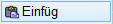
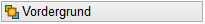
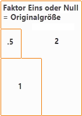
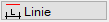
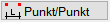
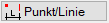
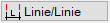

Wenn AutFol aktiviert ist (s. Untere Menüleiste), werden Pixelbilder in Folie 19 abgelegt.
Die Grafik wird nicht in der Zeichnung gespeichert, sondern nur mit dieser verknüpft. In der Zeichnung selbst wird somit nur der Dateipfad zur Grafik gespeichert. Wird die Quelldatei bearbeitet, und im selben Verzeichnis unter demselben Dateinamen gespeichert, wird bei dem nächsten Start von ISBCAD die eingefügte Datei aktualisiert.
·Achten Sie bei der Weitergabe der Zeichnung darauf, die verknüpften Dateien mitzuschicken und dass die Dateien im entsprechenden Verzeichnis zur Verfügung stehen.
·Die Grafiken können mit den folgenden Funktionen bearbeitet werden: Konst1 → [Dehnen], [Kopier], [Versch]; Konst2 → [Drehen], [Dupliz], [MaßKor].
·Wenn Sie Grafiken einbetten und dauerhaft in der Zeichnung speichern möchten, verwenden Sie die Funktion Dokumenteinbettung.
Unterstützt werden die folgenden Formate:
BMP, JPG, JPEG, GIF, WMF, EMF, ICO, DIB, PNG, TIF
Fehlende Verknüpfungen prüfen und Dateipfade korrigieren:
Wenn Sie den Dateipfad von Grafiken ändern, z. B. den Ordner oder die Grafik umbenennen, verschieben oder löschen, können sie in der Zeichnung nicht mehr angezeigt werden. Über [Datei | Grafik | Liste] können Sie fehlende Verknüpfungen prüfen und Dateipfade korrigieren (siehe Grafikliste).
1.Grafik auswählen und anpassen
§Wählen Sie in der Dateiauswahl [Pixel Datei lesen] die gewünschte Bilddatei aus und bestätigen Sie die Auswahl.
Die Grafik wird als Rahmen an den Cursor gehängt.
§Wählen Sie unter Lage oder Faktor eingeben, ob die Grafik in der Ebenenstruktur im Vorder- oder Hintergrund eingefügt werden soll.
Option |
Ebene |
-8 |
|
 |
7 |
§Geben Sie den Größenfaktor für die Grafik an. Der Faktor 1 oder 0 entspricht der Originalgröße.
Die Angabe des Größenfaktors ist optional. Am Cursor wird ein Rahmen in der eingegebenen Größe angezeigt. Korrigieren Sie ggf. den Größenfaktor mit einer erneuten Eingabe.
Faktor |
 |
2.Grafik platzieren
Führen Sie einen der folgenden Schritte aus:

§Sie können die Grafik frei platzieren. Legen Sie die Grafik in der Zeichnung mit einem Linksklick ab.
Sie können sofort eine weitere Grafik einfügen.

§Sie können den Faktor durch Messen von bestimmten Elementen ermitteln. Platzieren Sie die Grafik in der Zeichnung mit einem Linksklick.
§Klicken Sie einen beliebigen Punkt an, von dem aus gemessen werden soll. [Messen von].
Dieser Punkt wird als Nullpunkt festgehalten.
§Bewegen Sie die Maus an den gewünschten Punkt und bestätigen Sie mit Linksklick.
Bei der Mausbewegung wird die Entfernung zum Nullpunkt, maßstabsbezogen in der eingestellten Eingabeeinheit angezeigt. [Option | Einstellungen → Eingabeeinheiten].
Die ermittelte Länge wird dargestellt. [Länge alt].
§Geben Sie die tatsächliche Länge ein und bestätigen Sie mit Rechtsklick oder der Eingabetaste. [Länge neu].
Die Grafik wird mit dem ermittelten Faktor skaliert. Sie können die Länge der Grafik auch anhand von Zeichenelementen bestimmen. .
Optionen:
 |
Klicken Sie eine Linie an, um deren Länge zu übernehmen. |
 |
Klicken Sie zwei Punkte an. Der Abstand der Punkte (Anfangs- und Endpunkte, Mittelpunkte, Schnittpunkte) wird übernommen. |
 |
Klicken Sie einen Punkt und dann eine Linie an. Der lotrechte Abstand vom Punkt zur Linie wird als neue Länge übernommen. |
 |
Klicken Sie zwei Parallelen an. Der Abstand zwischen den Parallelen wird übernommen. |
§Legen Sie die Grafik mit einem Linksklick an der gewünschten Stelle ab.
Die Grafik wird platziert und Sie können sofort eine weitere Grafik einfügen.
Siehe auch: